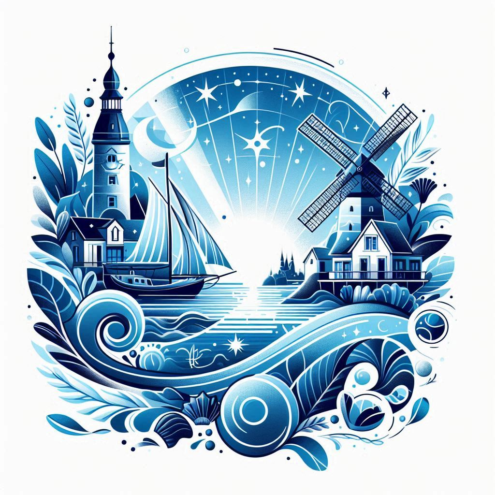
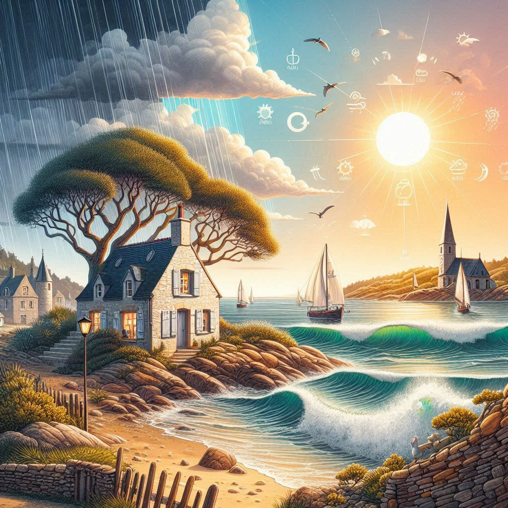

Saint-Jacut-de-la-Mer
L’écrin de mon enfance
Ah, Saint-Jacut-de-la-Mer… rien qu’à prononcer ce nom, voilà que surgissent les images de mon enfance, éclaboussées de lumière et de sel.
C’est un village niché au creux des Côtes-d’Armor, une presqu’île presque irréelle, où la mer et la terre se chuchotent des secrets. Chaque été, nous nous y retrouvions, mon frère, mes parents et cette grande tribu de cousins et cousines qui faisait vibrer les rues et les plages de nos rires. Les journées semblaient infinies, partagées entre les jeux de carte sur la plage, les parties de babyfoot endiablées à la Frégate, et les longues heures passées à scruter l’horizon.
Et cet horizon… il menait toujours à l’archipel des Ébihens, ce joyau sauvage que l’on atteignait à pied, à marée basse, comme si on franchissait la porte d’un autre monde. Aujourd’hui encore, c’est là que je retourne, avec mes propres enfants. Comme un passage de relais, comme un hommage à ce coin de paradis où le temps suspend son vol.
À la découverte d’un coin de paradis breton
Trésors de Saint-Jacut-de-la-Mer
La Banche : Le cœur animé de Saint-Jacut, avec ses maisons de pêcheurs et ses petites ruelles. On y sent l’âme du village.
Le Port : Un havre tranquille où se balancent doucement les bateaux de plaisance et les coquilliers. Le départ idéal pour une escapade maritime.
Le Camping : Un espace familial, à deux pas de la plage, où les générations se croisent, entre rires d’enfants et soirées sous les étoiles.
La plage du Rougeret : Une étendue de sable doré qui s’étire doucement, parfaite pour les balades pieds nus et les parties de pêche aux crabes. À marée basse, elle dévoile des trésors, à marée haute, elle invite à la baignade.
La Pointe du Chevet (Chef de l’île) : Un promontoire sauvage où les pins se courbent sous le vent, offrant une vue imprenable sur l’archipel des Ebihens. Un lieu pour rêver et respirer.
L’île des Ébihens : Un archipel mystérieux, accessible seulement à marée basse, quand la mer se retire pour dévoiler son chemin secret. Là-bas, le monde change. On y trouve des plages de sable blanc, des sentiers bordés de pins et une sensation de bout du monde. C’est un lieu d’aventure et de contemplation, où l’on peut oublier le temps, bercé par le chant des vagues et le cri des mouettes.


Des pépites à proximité
Autour de Saint-Jacut-de-la-Mer, à quelques battements d’ailes de mouette, se cachent des trésors qui donnent envie de prendre la route. Des lieux chargés de récits et de beautés, où l’histoire et la nature se rencontrent pour offrir des paysages à couper le souffle.
Saint-Malo : La cité corsaire
Saint-Malo, entourée par ses remparts, semble défier le temps et l’océan. Chaque ruelle murmure des récits de corsaires, tandis que le Fort National veille stoïquement. Flâner dans l’intra-muros, avec l’odeur du sel et des crêpes, c’est plonger dans une aventure gravée dans la pierre et le vent.
Cap Fréhel : L’appel du large
Au Cap Fréhel, les falaises abruptes se jettent dans l’océan, caressées par le vent et habillées de bruyères. Depuis le phare, la vue est un miracle : mer infinie, Fort La Latte et ciel sans limite. Ici, tout invite à se sentir libre, porté par l’immensité.
Île de Bréhat : Le bijou des eaux
L’île de Bréhat est un jardin posé sur la mer. Sans voitures, juste des sentiers fleuris, des criques paisibles et une lumière douce. Ici, le temps ralentit, laissant place à la poésie du silence et des vagues.
| Image | Nom | Distance (km) | Nombre de touristes/an | Lien Google Maps |
|---|---|---|---|---|
 |
Dinard | 21 km | 800 000 | Google Maps |
 |
Saint-Malo | 25 km | 1 500 000 | Google Maps |
 |
Fort National | 25 km | 300 000 | Google Maps |
 |
Erquy | 26 km | 250 000 | Google Maps |
 |
Fort La Latte | 31 | 200000 | Google Maps |
 |
Cap Fréhel | 34 km | 400 000 | Google Maps |
 |
Dinan | 36 km | 600 000 | Google Maps |
 |
Cancale | 46 km | 500 000 | Google Maps |
 |
Île de Bréhat | 74 km | 350 000 | Google Maps |
 |
Mont Saint-Michel | 79 km | 2 800 000 | Google Maps |
Météo

Créé par Anaël Delorme, bien aidé par ChatGPT et Claude.ai.